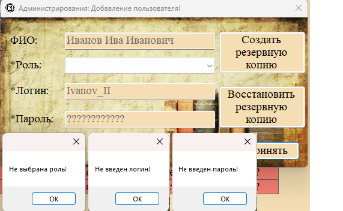
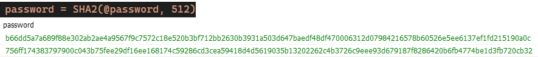
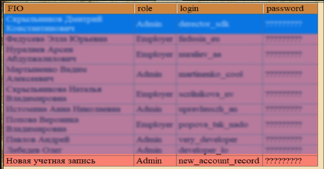

Функция «Добавление нового пользователя» доступна только администратору и позволяет создать новую учётную запись для сотрудника.

Рис. 1. Кнопка «Добавить» в разделе «Пользователи»
Порядок действий
1. Перейдите в раздел «Данные → Пользователи».
2. Нажмите кнопку «Добавить» (на панели инструментов, в контекстном меню или внизу окна).

Рис. 2. Форма добавления нового пользователя
3. Заполните поля формы:
| Поле | Обязательное | Описание |
|---|---|---|
| ФИО | Нет | Полное имя сотрудника |
| Роль | Да | Выбор из выпадающего списка: Admin или Employer |
| Логин | Да | Уникальное имя пользователя для входа (например, «Ivanov_II») |
| Пароль | Да | Пароль (будет сохранён в зашифрованном виде с помощью SHA-512) |
4. Нажмите кнопку «Принять» для сохранения или «Отмена» для отмены.

Рис. 3. Сообщение об ошибке, если не выбрана роль или не введён логин/пароль
Проверки при добавлении
Система выполняет следующие проверки:
— Роль: должна быть выбрана (Admin или Employer).
— Логин: не должен быть пустым; должен быть уникальным (при попытке создать пользователя с существующим логином возникнет ошибка базы данных).
— Пароль: не должен быть пустым при создании нового пользователя.
Хэширование пароля

Рис. 4. Пароль сохраняется в базу данных в виде хэша SHA-512
При сохранении пользователя введённый пароль не хранится в открытом виде. Он преобразуется с помощью алгоритма SHA-512, и в базу данных записывается только хэш. Это обеспечивает безопасность — даже при доступе к базе данных пароль невозможно восстановить.
Результат добавления

Рис. 5. Новая учётная запись появилась в таблице
После успешного добавления:
— Новая запись появляется в таблице пользователей.
— В статусной строке появляется сообщение «Запись добавлена».
— Новый пользователь может войти в систему, используя указанные логин и пароль.